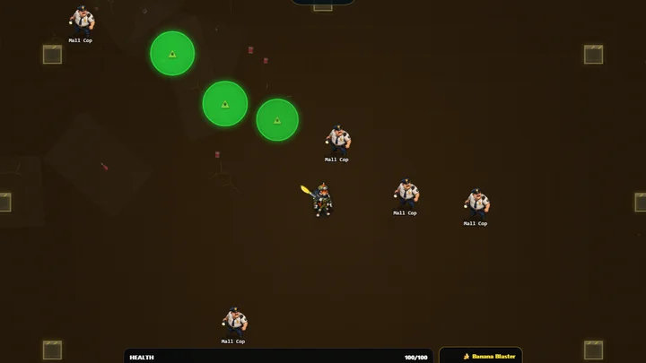

Friendly rivalry
See the dare before you take it.
A challenge is a recorded run to beat, not a live human opponent. Open a shared link to inspect its seed, mode, loadout, expiry and score scope before choosing to play.

Invite inspection · no game starts here
The challenge card
Open a shared challenge link to inspect the rules. No invitation is loaded.
Challenge results are friendly and self-reported. A saved run is not a bot or a live person. The public board has separate score checks.
Saved run, not live multiplayer
The target comes from a shared saved run. A seed duel may store one friendly response, but nobody is playing live against you and no bot is standing in for that person.
What matches
The invite fixes seed, difficulty, game mode and starter loadout. Your upgrades and decisions can still differ. A replay code is advisory evidence, not a frame-perfect or competitive verification receipt.
Score trust
The rival target and duel result are friendly, self-reported comparisons. Public leaderboard eligibility follows the game's separate signed-run checks. An invite checksum detects damaged links but cannot authenticate a score.